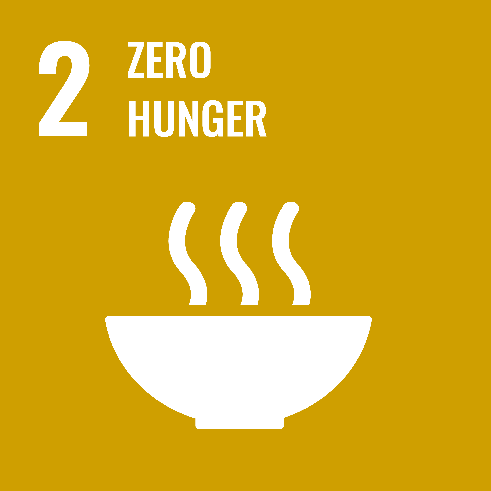
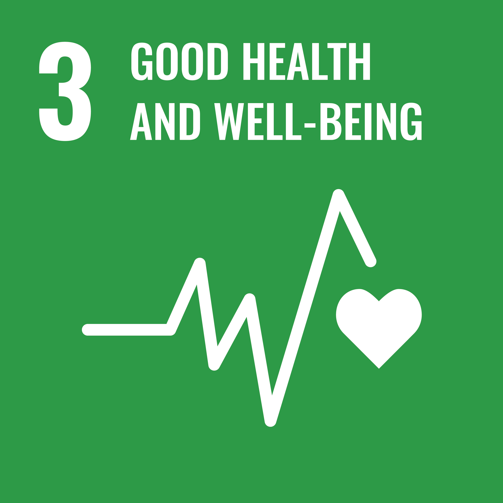
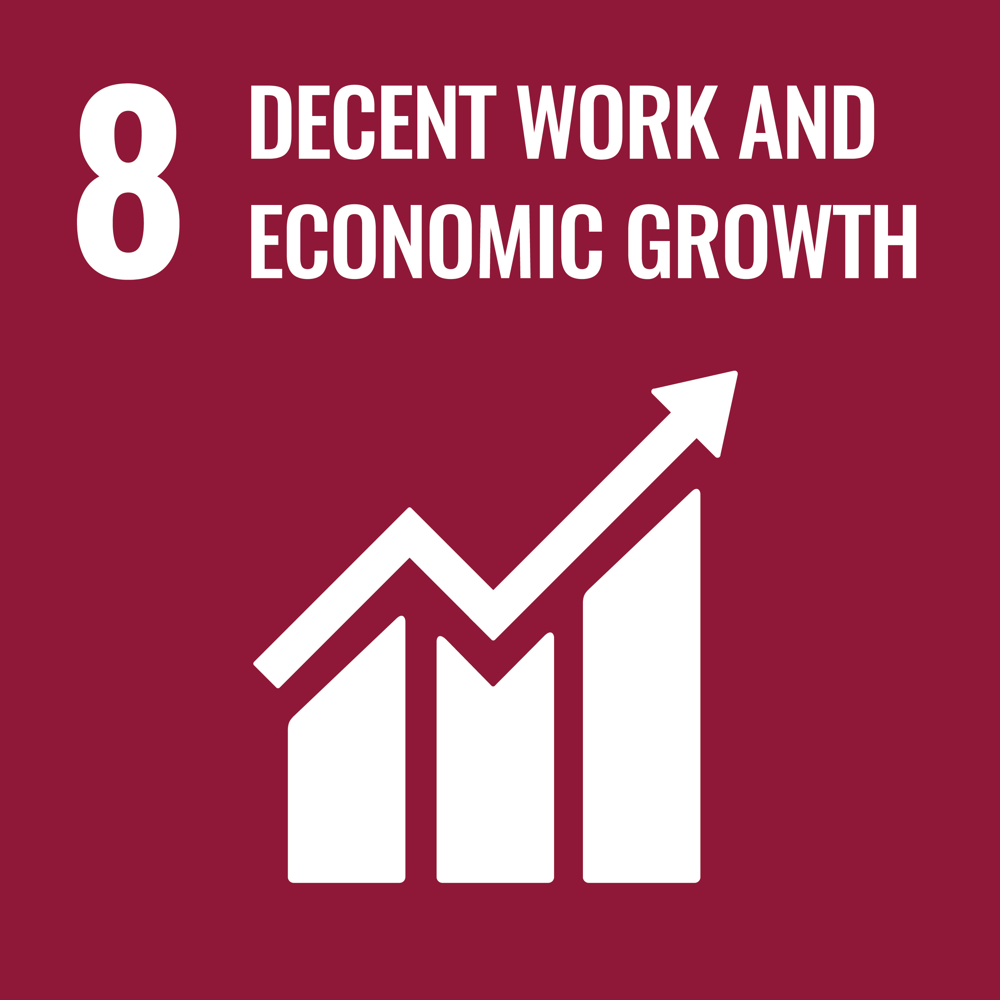
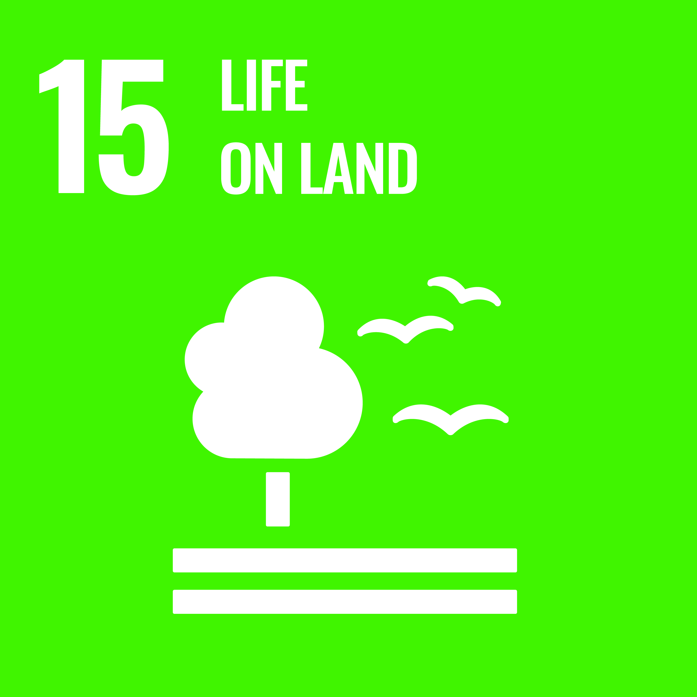

A New Chapter in West Nile.
SDC is beginning a new project in the West Nile region of Uganda. The programme itself is still being defined — what's already confirmed is who we're building it with.
Who we're building this with.
Three relationships are in place before the project's scope is finalised — the Ugandan government, a local NGO already working on the ground, and an academic partner.
 Government
Government
Ministry of Agriculture, Animal Industry and Fisheries
The Ugandan government ministry responsible for agricultural policy and rural development nationally, partnering with SDC on this project's agricultural component.
 Local NGO
Local NGO
Navoda
A Ugandan non-governmental organisation, confirmed to have presence and staff in the West Nile region for this project. Navoda is our local implementing partner on the ground.
 Academic Partner
Academic Partner
Makerere University
Uganda's oldest and largest public university, confirmed as an academic partner on this project. The specific nature of that involvement is still being defined.
Where SDC's work sits within the 17 SDGs.
SDC is organised around the United Nations' 17 Sustainable Development Goals. These seven are the ones the organisation states as its stated focus areas — not a claim that all seven are already active in West Nile specifically.

Promoting maternal health, child nutrition, and medical programmes.

Supporting access to education, vocational training, and digital literacy.

Expanding access to clean drinking water and sanitation facilities.

Empowering local entrepreneurs and job-creation initiatives.

Scalable carbon sequestration through land use and agroforestry design.

Restoring degraded lands and protecting terrestrial biodiversity.

Multi-stakeholder collaboration across NGOs, local government, academia and the private sector.
What's still being defined.
Rather than guess at scope, timeline or funding before they're settled, here's what's honestly still open.
This page will be updated as these details are confirmed.
Our work in Uganda.
Documentation from SDC's ongoing work in Uganda — field assessments, community meetings, and agricultural programmes already under way.
 Community distribution day
Community distribution day
 Community training session
Community training session
 Irrigation line installation
Irrigation line installation
Photographs from SDC's broader work in Uganda. Not all images shown are necessarily from the West Nile project specifically.
The wider group behind SDC.
Separate from the West Nile project's local partners above — these are the organisations SDC sits alongside more broadly.


Discover More About Our Projects
A dedicated non-profit organization advancing the United Nations 17 Sustainable Development Goals across the Global South. — A calming influence.
Sustainable Development Crescent
A dedicated non-profit organization committed to advancing the United Nations 17 Sustainable Development Goals (SDGs) in The Global South.
We work with local communities, government agencies, and international partners to implement impactful programs that drive positive change.
— A calming influence.

Our Focus Areas

Zero Hunger (SDG 2)
Supporting sustainable agriculture, food security, and improved nutrition.

Good Health & Well-Being (SDG 3)
Promoting maternal health, child nutrition, and medical programs.

Quality Education (SDG 4)
Supporting access to education, vocational training, and digital literacy.

Gender Equality (SDG 5)
Promoting equal opportunities, empowering women and girls, and advancing gender equality in communities.

Economic Growth (SDG 8)
Empowering local entrepreneurs and job creation initiatives.

Climate Action (SDG 13)
Through scalable carbon sequestration in land use and agroforestry design.

Life on Land (SDG 15)
Restoring degraded lands and protecting terrestrial biodiversity.

Partnerships for the Goals (SDG 17)
Multi-stakeholder collaboration across sectors and regions.

Reach the heights of the UN Sustainable Development Goals
Contact UsWho We Are
Sustainable Development Crescent (SDC) is a mission-driven organisation committed to advancing sustainable development across the Global South.
We collaborate with local communities, governments, and international partners to design and deliver initiatives that create lasting social, environmental, and economic impact.
Our work is guided by the United Nations Sustainable Development Goals and grounded in transparency, partnership, and long-term resilience.
Contact Us
The Sustainable Development Crescent supports funding initiatives focused on sustainable development. We are currently refining our website content as part of ongoing improvements.
Executive Summary – Sustainable Development Crescent
The Sustainable Development Crescent (SDC) is a purpose-driven NGO committed to enabling resilient, regenerative agriculture systems in developing and climate-vulnerable regions. Our core mission is to support the transformation of conventional cash crop farming into diversified agroforestry systems by providing targeted feasibility bridge funding. This investment enables smallholder and community-based farmers to transition to sustainable land-use practices that enhance biodiversity, food security, carbon sequestration, and long-term economic resilience.
Strategic Objective: Agroforestry as a Climate Solution
SDC's primary objective is to support the conversion of monoculture cash crop farms into biodiverse agroforestry systems. By introducing native species, farmers can regenerate soil health, foster pollinator populations, and establish multi-tiered crop systems that supply food, timber, fibre, and natural carbon sinks. Our model enhances both livelihoods and ecosystem services, breaking cycles of environmental degradation and economic dependency.
Contribution to UN Sustainable Development Goals (SDGs)
- SDG 2 – Zero Hunger: Improving agricultural productivity and crop diversity.
- SDG 3 – Good Health & Well-Being: Maternal health, nutrition, and medical support.
- SDG 4 – Quality Education: Skills training, vocational education, and digital literacy.
- SDG 5 – Gender Equality: Empowering women and girls, promoting equal opportunities, and reducing gender-based inequalities.
- SDG 8 – Economic Growth: Entrepreneurship, job creation, and farmer empowerment.
- SDG 13 – Climate Action: Scalable carbon sequestration and agroforestry design.
- SDG 15 – Life on Land: Land restoration and biodiversity protection.
- SDG 17 – Partnerships: Collaboration with governments, NGOs, and private sector partners.
Capacity Building & Community Engagement
- Training on agroforestry, ecosystem services, and regenerative agriculture.
- Leadership development for long-term community project management.
- Inclusive engagement frameworks prioritising women and youth.
- Data systems for carbon tracking and transparent reporting.
Trust, Transparency & Accountability
- Annual third-party audits and open financial reporting.
- Conflict of Interest policy for all Trustees and Directors.
- Dedicated remuneration committee for financial governance.
- Impact metrics including biodiversity and carbon assessments.
- Independent annual evaluations based on defined KPIs.
- Research partnerships validating ecological outcomes.
- Strong track record with governments, NGOs, and local communities.
A calming influence.